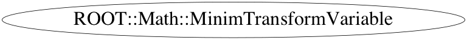

Function Members (Methods)
public:
Class Charts



Function documentation
MinimTransformVariable(double lower, double upper, ROOT::Math::SinVariableTransformation* trafo)
constructor for double bound variable
{ } MinimTransformVariable(double lower, SqrtLowVariableTransformation * trafo)
constructor for lower bound variable
{} MinimTransformVariable(double upper, SqrtUpVariableTransformation * trafo)
constructor for upper bound variable
{}double DerivativeIntToExt(double x) const
derivative of the internal to external transformation ( d Int2Ext / d int )